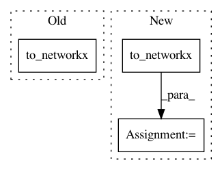

f89cf5db8b52256d7ca4405dc8a4cd809c4e9229,test/utils/test_convert.py,,test_to_networkx,#,19
Before Change
row = torch.tensor([0, 1, 0])
col = torch.tensor([1, 0, 0])
adj = to_networkx(torch.stack([row, col], dim=0))
assert networkx.to_numpy_matrix(adj).tolist() == [[1, 1], [1, 0]]
After Change
assert networkx.to_numpy_matrix(G).tolist() == [[3, 1], [2, 0]]
edge_attr = torch.Tensor([[1, 1], [2, 2], [3, 3]])
G = to_networkx(torch.stack([row, col], dim=0), edge_attr=edge_attr)
assert G[0][0]["weight"].tolist() == [3, 3]
assert G[0][1]["weight"].tolist() == [1, 1]
assert G[1][0]["weight"].tolist() == [2, 2]
In pattern: SUPERPATTERN
Frequency: 3
Non-data size: 3
Instances
Project Name: rusty1s/pytorch_geometric
Commit Name: f89cf5db8b52256d7ca4405dc8a4cd809c4e9229
Time: 2018-12-28
Author: matthias.fey@tu-dortmund.de
File Name: test/utils/test_convert.py
Class Name:
Method Name: test_to_networkx
Project Name: rusty1s/pytorch_geometric
Commit Name: 54ff7b04669450ceca33852407891c5645472ca5
Time: 2019-04-29
Author: matthias.fey@tu-dortmund.de
File Name: test/utils/test_convert.py
Class Name:
Method Name: test_to_networkx
Project Name: dmlc/dgl
Commit Name: 7156c7163b046686064d7c9de445041870e672bc
Time: 2018-12-01
Author: minjie.wang@nyu.edu
File Name: tutorials/1_first.py
Class Name:
Method Name: